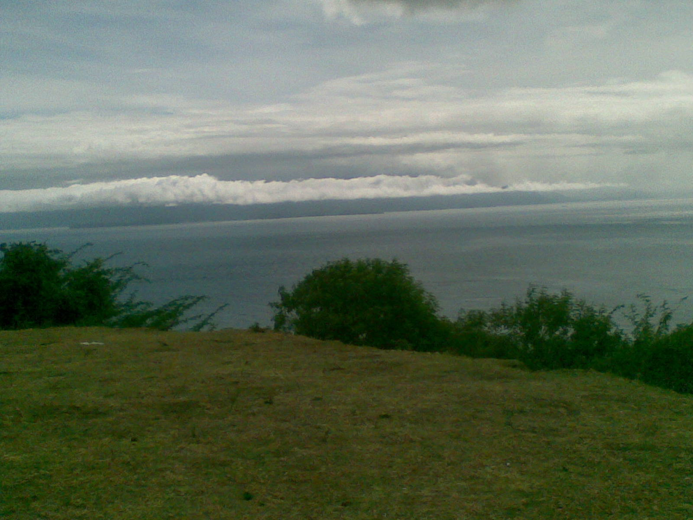
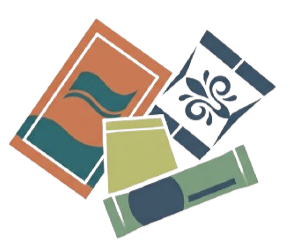

Plastic in the Philippines
Explore the plastic problem in the country.
READ MORE →SCIENCE • TECHNOLOGY • SOCIETY
ABOUT PLASTIC IN THE BLUE
Plastic in the Blue is an interactive research project that explores plastic pollution, microplastics, and marine ecosystems in the Philippines. The project uses the Verde Island Passage (VIP) as its main local marine context, providing a Philippine setting for understanding how plastic waste, marine environments, scientific research, and environmental concerns are connected.
The project begins with the everyday use of plastic in the Philippines, particularly single-use packaging such as sachets. The widespread use of these products provides an important social and economic context for understanding how plastic enters the waste stream. Looking at these everyday practices helps connect individual and community-level consumption with broader environmental concerns.
The website presents selected findings from scientific studies, environmental information, and Philippine policies in an interactive format. Instead of replacing the original research, it organizes selected information into accessible sections and topic-based cards. This allows readers to explore the subject more easily while still recognizing the research and sources behind the information.
The project also considers Philippine policies related to plastic and solid waste management, including Republic Act No. 9003, or the Ecological Solid Waste Management Act of 2000, and Republic Act No. 11898, or the Extended Producer Responsibility Act of 2022. These policies provide additional context for understanding how plastic waste and packaging are addressed through waste management and producer responsibility.
PROJECT FOCUS & SCOPE
Plastic in the Blue focuses on four connected areas:
The project examines plastic consumption in the Philippines, including the widespread use of sachets and small-quantity purchasing, or tingi. It also considers how discarded plastic can move through environmental pathways, including waterways that connect land-based waste with coastal and marine environments.
The Verde Island Passage serves as the project's main local marine context. Its importance to marine biodiversity makes it a relevant setting for understanding marine ecosystems and examining research related to plastic and microplastic contamination.
One study published in 2024 examined microplastic contamination in seaweed along the Verde Island Passage. Researchers collected 6 kilograms of wet-weight seaweed from the west coast of Calatagan, Batangas, and detected 113 microplastic pieces. Fibers accounted for 84.07% of the identified particles. This study provides a local example of how researchers investigate microplastic contamination in a Philippine marine environment. Santiago et al. (2024)↗
The project also considers the policy context surrounding plastic and solid waste management through Republic Act No. 9003 and Republic Act No. 11898. These laws provide a basis for understanding how waste management and plastic packaging responsibility are addressed in the Philippines.
WHAT YOU WILL FIND
This website brings together scientific research, environmental information, Philippine context, and policy in an interactive format.
The research section contains topic-based cards that visitors can explore to learn about plastic pollution, marine ecosystems, microplastics, and their connections to the environment.
Each section provides selected information from relevant sources and research, presented in a way that is easier to explore without requiring readers to begin with highly technical scientific literature.
The goal is not to provide every detail about plastic pollution, but to give readers a clear starting point for understanding the issue, exploring Philippine research and environmental concerns, and seeing how plastic connects everyday life with marine environments.

Verde Island Passage, Batangas, Philippines
Photo:
Kampfgruppe
/
Wikimedia Commons, CC BY-SA 3.0

Explore the plastic problem in the country.
READ MORE →Learn how plastic can enter the ocean.
READ MORE →Explore organisms and their environment.
READ MORE →Discover tiny plastic particles.
READ MORE →